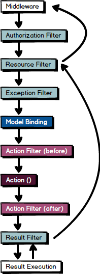

<!DOCTYPE html>
<html>
<head><meta name="generator" content="Hexo 3.8.0">
  <meta charset="utf-8">
  <title>ASP.net Core (2.2) 整理 1 :: [Auth &amp; Authorize] | The name is Alex</title>
  <meta name="viewport" content="width=device-width,initial-scale=1,maximum-scale=1,minimum-scale=1">
  <meta name="description" content="寫了好多好多年的 ASP.Net (在學校是從ASP開始寫，出社會後 1.1 開始)。從 .NET Core 出現以來一直不太有動力進去寫。到今年開始做公司的專案決定用 MVC + Razor 來寫。才開始揀 .NET Core 與 ASP.NET MVC 這些不同的地方。 本篇會由建立 ASP.NET Core 2 Web Application 開始介紹許多需要實作的許多細節，或許是官方文章沒">
<meta name="keywords" content="asp.net-core">
<meta property="og:type" content="article">
<meta property="og:title" content="ASP.net Core (2.2) 整理 1 :: [Auth &amp; Authorize]">
<meta property="og:url" content="http://alexpacer.github.io/posts/904aaacf/index.html">
<meta property="og:site_name" content="The name is Alex">
<meta property="og:description" content="寫了好多好多年的 ASP.Net (在學校是從ASP開始寫，出社會後 1.1 開始)。從 .NET Core 出現以來一直不太有動力進去寫。到今年開始做公司的專案決定用 MVC + Razor 來寫。才開始揀 .NET Core 與 ASP.NET MVC 這些不同的地方。 本篇會由建立 ASP.NET Core 2 Web Application 開始介紹許多需要實作的許多細節，或許是官方文章沒">
<meta property="og:locale" content="tw">
<meta property="og:image" content="http://alexpacer.github.io/posts/904aaacf/filter-execution-order.png">
<meta property="og:updated_time" content="2019-10-02T03:53:13.149Z">
<meta name="twitter:card" content="summary">
<meta name="twitter:title" content="ASP.net Core (2.2) 整理 1 :: [Auth &amp; Authorize]">
<meta name="twitter:description" content="寫了好多好多年的 ASP.Net (在學校是從ASP開始寫，出社會後 1.1 開始)。從 .NET Core 出現以來一直不太有動力進去寫。到今年開始做公司的專案決定用 MVC + Razor 來寫。才開始揀 .NET Core 與 ASP.NET MVC 這些不同的地方。 本篇會由建立 ASP.NET Core 2 Web Application 開始介紹許多需要實作的許多細節，或許是官方文章沒">
<meta name="twitter:image" content="http://alexpacer.github.io/posts/904aaacf/filter-execution-order.png">
  <link rel="icon" href="/favicon.ico">
  

  <link rel="stylesheet" href="https://cdnjs.cloudflare.com/ajax/libs/bulma/0.6.1/css/bulma.min.css">
  <link rel="stylesheet" href="https://maxcdn.bootstrapcdn.com/font-awesome/4.7.0/css/font-awesome.min.css">
  <link rel="stylesheet" href="/css/style.css">
  
    <link rel="stylesheet" href="/css/prism.css">
  
  
<script type="application/ld+json">
  {
  "@context": "http://schema.org",
  "@type": "BlogPosting",
  "headline": "ASP.net Core (2.2) 整理 1 :: [Auth & Authorize]",
  "name": "ASP.net Core (2.2) 整理 1 :: [Auth & Authorize]",
  "datePublished": "2019-02-14T07:14:31.000Z",
  "dateModified": "2019-10-02T03:53:13.149Z",
  "mainEntityOfPage": {
    "@type": "WebPage",
    "@id": "http://alexpacer.github.io/posts/904aaacf/index.html"
  },
  "author": {
    "@type": "Person",
    "name": "Alex Wei",
    "image": "/images/avatar.jpg"
  },
  "publisher": {
    "@type": "Organization",
    "name": "Alex Wei",
    "logo": {
      "@type": "ImageObject",
      "url": "/images/avatar.jpg"
    }
  }
}
</script>

  
  
    <script src="/js/prism.js"></script>
  
  <!-- <link href="/css/prism.css" rel="stylesheet" /> -->
  <link href="/css/prism-line-numbers.css" rel="stylesheet">
<link rel="stylesheet" href="/css/prism-twilight.css" type="text/css"></head>
</html>
<body>
  

  <header class="navbar" role="navigation" aria-label="main navigation">
  <div class="navbar-brand">
    <a href="/" class="navbar-item">
      The name is Alex
    </a>
  </div>
</header>

  <div class="container">
    <div class="columns">
      <div class="main column is-8">
        <article class="post">
  <figure class="post-thumbnail">
    

  </figure>
  <span>2019-02-14
</span>
  <h1 class="title">ASP.net Core (2.2) 整理 1 :: [Auth &amp; Authorize]</h1>
  
  <div class="tags">
    
      <a class="tag" href="/tags/asp-net-core/">asp.net-core</a>
    
  </div>


  <div class="content">
    <p>寫了好多好多年的 ASP.Net (在學校是從ASP開始寫，出社會後 1.1 開始)。從 .NET Core 出現以來一直不太有動力進去寫。到今年開始做公司的專案決定用 MVC + Razor 來寫。才開始揀 .NET Core 與 ASP.NET MVC 這些不同的地方。</p>
<p>本篇會由建立 ASP.NET Core 2 Web Application 開始介紹許多需要實作的許多細節，或許是官方文章沒有提到的。Visual Studio 所建立起來的 Template 與基本官方文章的內容就不多加著墨了。</p>
<h1 id="客製化使用者驗證"><a href="#客製化使用者驗證" class="headerlink" title="客製化使用者驗證"></a>客製化使用者驗證</h1><p>如果不使用 ASP.NET Core 所提供的 Identity，就必須要自己控制使用者的資料。在我實作的系統上有一些與 ASP.NET Core Identity 不同的 Authorization 的需求，所以我做了一些客製化。</p>
<h1 id="需求是這樣的"><a href="#需求是這樣的" class="headerlink" title="需求是這樣的"></a>需求是這樣的</h1><blockquote>
<p>內部 Windows AD 的網站，使用者會透過 Windows Authentication 驗證身分。<br>驗證後，需要進資料庫查詢使用者的使用者名稱，取得網站上可設定給使用者的權限與該權限(們)可以對網站資源操作的動作。</p>
</blockquote>
<p>權限控管的規則大概是：<br><code>1</code> User (使用者) - <code>*</code> Roles (角色)<br><code>1</code> Role (角色)  - <code>*</code> Operatons + Resources (對某一個資源可執行的行為權限)</p>
<blockquote>
<p>example:<br>  Alex 登入<br>  Alex 的角色是 [Sales, Account Manager]<br>  Sales 可以 [<code>Read</code>] =&gt; <code>Orders</code> ( Order 是 Domain 裡的一個資源(Resource))<br>  Account Manager 可以 [<code>Read</code>, <code>Modify</code>, <code>Archive</code>] =&gt; <code>Orders</code><br>  Account Manager 可以 [<code>Read</code>, <code>Modify</code>, <code>Archive</code>] =&gt; <code>Customers</code> ( Customer 也是 Resource)  </p>
<p>所以 Alex 可以<br>   Read, Modify, Archive Orders<br>   Read, Modify, Archive Customers  </p>
</blockquote>
<h1 id="驗證的設定"><a href="#驗證的設定" class="headerlink" title="驗證的設定"></a>驗證的設定</h1><p><code>Startup.cs</code></p>
<pre class=" language-csharp"><code class="language-csharp"><span class="token keyword">public</span> <span class="token keyword">void</span> <span class="token function">ConfigureServices</span><span class="token punctuation">(</span>IServiceCollection services<span class="token punctuation">)</span> <span class="token punctuation">{</span>

    <span class="token keyword">if</span> <span class="token punctuation">(</span>_env<span class="token punctuation">.</span><span class="token function">IsDevelopment</span><span class="token punctuation">(</span><span class="token punctuation">)</span><span class="token punctuation">)</span> <span class="token punctuation">{</span>
        <span class="token comment" spellcheck="true">/// ...</span>
    <span class="token punctuation">}</span> <span class="token keyword">else</span> <span class="token punctuation">{</span>
        services
            <span class="token comment" spellcheck="true">/// 這邊可以指定驗證使用者要使用的 Schema。</span>
            <span class="token comment" spellcheck="true">/// 這邊所指定的 Schema 會影響到 HttpContext.User 的身分</span>
            <span class="token punctuation">.</span><span class="token function">AddAuthentication</span><span class="token punctuation">(</span>opt <span class="token operator">=</span><span class="token operator">></span> <span class="token punctuation">{</span>

                <span class="token comment" spellcheck="true">/// 我需要客製化使用者驗證的格式，所以在這邊指定了我自己的格式</span>

                <span class="token comment" spellcheck="true">/// AuthenticateAsync() 時會對應到這個 Scheme，自訂一個字串</span>
                opt<span class="token punctuation">.</span>DefaultAuthenticateScheme <span class="token operator">=</span> RealUserAuthOptions<span class="token punctuation">.</span>DefaultScheme<span class="token punctuation">;</span>   

                <span class="token comment" spellcheck="true">/// ChallengeAsync() 時會對應到這個 Scheme，自訂一個字串</span>
                opt<span class="token punctuation">.</span>DefaultChallengeScheme <span class="token operator">=</span> RealUserAuthOptions<span class="token punctuation">.</span>DefaultScheme<span class="token punctuation">;</span>
            <span class="token punctuation">}</span><span class="token punctuation">)</span>
            <span class="token comment" spellcheck="true">/// 在新增了 Authentication 之後，就可以接著利用它 return 的 AuthenticationBuilder 來設定怎麼驗證使用者</span>
            <span class="token punctuation">.</span><span class="token function">AddRealUserAuth</span><span class="token punctuation">(</span><span class="token punctuation">)</span><span class="token punctuation">;</span>
    <span class="token punctuation">}</span>
<span class="token punctuation">}</span>

</code></pre>
<p><code>AddRealUserAuth</code> 這個 Extension 的工作是替我自定義的 Authenticate Scheme 指定一個處理的方式，<code>RealUserAuthHandler</code></p>
<p><code>AuthenticationBuilderExtensions.cs</code></p>
<pre class=" language-csharp"><code class="language-csharp"><span class="token keyword">public</span> <span class="token keyword">static</span> <span class="token keyword">class</span> <span class="token class-name">AuthenticationBuilderExtensions</span> <span class="token punctuation">{</span>

    <span class="token keyword">public</span> <span class="token keyword">static</span> AuthenticationBuilder <span class="token function">AddRealUserAuth</span><span class="token punctuation">(</span>
        <span class="token keyword">this</span> AuthenticationBuilder builder<span class="token punctuation">)</span>
    <span class="token punctuation">{</span>
        <span class="token keyword">return</span> builder<span class="token punctuation">.</span><span class="token generic-method function">AddScheme<span class="token punctuation">&lt;</span>RealUserAuthOptions<span class="token punctuation">,</span> RealUserAuthHandler<span class="token punctuation">></span></span><span class="token punctuation">(</span>
            RealUserAuthOptions<span class="token punctuation">.</span>DefaultScheme<span class="token punctuation">,</span> <span class="token keyword">null</span><span class="token punctuation">)</span><span class="token punctuation">;</span>
    <span class="token punctuation">}</span>
<span class="token punctuation">}</span>
</code></pre>
<p>或許我們有可能會需要在 Startup.cs 的階段就定義一些設定值帶進來。如果不需要的話其實實際的設定就是這樣：</p>
<pre class=" language-csharp"><code class="language-csharp">services
    <span class="token punctuation">.</span><span class="token function">AddAuthentication</span><span class="token punctuation">(</span>opt <span class="token operator">=</span><span class="token operator">></span> <span class="token punctuation">{</span>
        <span class="token comment" spellcheck="true">/// ...</span>
    <span class="token punctuation">}</span><span class="token punctuation">)</span>
    <span class="token punctuation">.</span><span class="token generic-method function">AddScheme<span class="token punctuation">&lt;</span>DevUserAuthOptions<span class="token punctuation">,</span> RealUserAuthHandler<span class="token punctuation">></span></span><span class="token punctuation">(</span>
        DevUserAuthOptions<span class="token punctuation">.</span>DefaultScheme<span class="token punctuation">,</span> <span class="token keyword">null</span><span class="token punctuation">)</span><span class="token punctuation">;</span>
</code></pre>
<h1 id="處理驗證的部分"><a href="#處理驗證的部分" class="headerlink" title="處理驗證的部分"></a>處理驗證的部分</h1><p>其實就是替已經登入 (通過 Windows Authentication) 的使用者做出 <code>ClaimsPrincipal</code> 並且把使用者的權限指定到 Principle 的 Role ClaimeType。</p>
<p>進資料庫找已通過 Windows Authentication 的使用者資料會一起把使用者被賦予的腳色撈出來。</p>
<p>接下來要找個地方來驗證使用者。</p>
<p><code>RealUserAuthHandler.cs</code></p>
<pre class=" language-csharp"><code class="language-csharp"><span class="token keyword">public</span> <span class="token keyword">class</span> <span class="token class-name">RealUserAuthHandler</span> <span class="token punctuation">:</span> AuthenticationHandler<span class="token operator">&lt;</span>RealUserAuthOptions<span class="token operator">></span>
<span class="token punctuation">{</span>
    <span class="token keyword">private</span> <span class="token keyword">readonly</span> IUserService _userService<span class="token punctuation">;</span>

    <span class="token keyword">public</span> <span class="token function">RealUserAuthHandler</span><span class="token punctuation">(</span>
        IOptionsMonitor<span class="token operator">&lt;</span>RealUserAuthOptions<span class="token operator">></span> options<span class="token punctuation">,</span> ILoggerFactory logger<span class="token punctuation">,</span>
        UrlEncoder encoder<span class="token punctuation">,</span> ISystemClock clock<span class="token punctuation">,</span> 
        IUserService userService<span class="token punctuation">)</span>
        <span class="token punctuation">:</span> <span class="token keyword">base</span><span class="token punctuation">(</span>options<span class="token punctuation">,</span> logger<span class="token punctuation">,</span> encoder<span class="token punctuation">,</span> clock<span class="token punctuation">)</span>
    <span class="token punctuation">{</span>
        _userService <span class="token operator">=</span> userService<span class="token punctuation">;</span>
    <span class="token punctuation">}</span>

    <span class="token keyword">protected</span> <span class="token keyword">override</span> <span class="token keyword">async</span> Task<span class="token operator">&lt;</span>AuthenticateResult<span class="token operator">></span> <span class="token function">HandleAuthenticateAsync</span><span class="token punctuation">(</span><span class="token punctuation">)</span>
    <span class="token punctuation">{</span>
        <span class="token keyword">var</span> identity <span class="token operator">=</span> Request<span class="token punctuation">.</span>HttpContext<span class="token punctuation">.</span>User<span class="token punctuation">.</span>Identity<span class="token punctuation">;</span>
        <span class="token keyword">if</span> <span class="token punctuation">(</span>identity<span class="token punctuation">.</span>IsAuthenticated<span class="token punctuation">)</span> <span class="token comment" spellcheck="true">/// 使用者有經過 Windows Authentication </span>
        <span class="token punctuation">{</span>
            <span class="token comment" spellcheck="true">/// 撈出使用者的身分與權限</span>
            <span class="token keyword">var</span> userInfo <span class="token operator">=</span> <span class="token keyword">await</span> _userService<span class="token punctuation">.</span><span class="token function">GetUser</span><span class="token punctuation">(</span>identity<span class="token punctuation">.</span>Name<span class="token punctuation">)</span><span class="token punctuation">;</span>
            <span class="token keyword">if</span><span class="token punctuation">(</span>userInfo <span class="token operator">!=</span> <span class="token keyword">null</span><span class="token punctuation">)</span> <span class="token punctuation">{</span>
                <span class="token keyword">var</span> principle <span class="token operator">=</span> <span class="token keyword">new</span> <span class="token class-name">ClaimsIdentity</span><span class="token punctuation">(</span>AuthConst<span class="token punctuation">.</span>RealUserClaimsName<span class="token punctuation">)</span><span class="token punctuation">;</span>
                principle<span class="token punctuation">.</span><span class="token function">AddClaim</span><span class="token punctuation">(</span><span class="token keyword">new</span> <span class="token class-name">Claim</span><span class="token punctuation">(</span>ClaimTypes<span class="token punctuation">.</span>Anonymous<span class="token punctuation">,</span> <span class="token keyword">bool</span><span class="token punctuation">.</span>FalseString<span class="token punctuation">)</span><span class="token punctuation">)</span><span class="token punctuation">;</span>
                principle<span class="token punctuation">.</span><span class="token function">AddClaim</span><span class="token punctuation">(</span><span class="token keyword">new</span> <span class="token class-name">Claim</span><span class="token punctuation">(</span>ClaimTypes<span class="token punctuation">.</span>Name<span class="token punctuation">,</span> identity<span class="token punctuation">.</span>Name<span class="token punctuation">)</span><span class="token punctuation">)</span><span class="token punctuation">;</span>
                principle<span class="token punctuation">.</span><span class="token function">AddClaim</span><span class="token punctuation">(</span><span class="token keyword">new</span> <span class="token class-name">Claim</span><span class="token punctuation">(</span>ClaimTypes<span class="token punctuation">.</span>Email<span class="token punctuation">,</span> userInfo<span class="token punctuation">.</span>Email<span class="token punctuation">)</span><span class="token punctuation">)</span><span class="token punctuation">;</span>
                principle<span class="token punctuation">.</span><span class="token function">AddClaim</span><span class="token punctuation">(</span><span class="token keyword">new</span> <span class="token class-name">Claim</span><span class="token punctuation">(</span>AuthConst<span class="token punctuation">.</span>ClaimTypeUserId<span class="token punctuation">,</span> userInfo<span class="token punctuation">.</span>UserId<span class="token punctuation">.</span><span class="token function">ToString</span><span class="token punctuation">(</span><span class="token punctuation">)</span><span class="token punctuation">)</span><span class="token punctuation">)</span><span class="token punctuation">;</span>
                <span class="token keyword">if</span> <span class="token punctuation">(</span>userInfo<span class="token punctuation">.</span>Roles <span class="token operator">!=</span> <span class="token keyword">null</span><span class="token punctuation">)</span>
                <span class="token punctuation">{</span>
                    <span class="token keyword">foreach</span> <span class="token punctuation">(</span><span class="token keyword">var</span> r <span class="token keyword">in</span> userInfo<span class="token punctuation">.</span>Roles<span class="token punctuation">)</span>
                    <span class="token punctuation">{</span>
                        principle<span class="token punctuation">.</span><span class="token function">AddClaim</span><span class="token punctuation">(</span><span class="token keyword">new</span> <span class="token class-name">Claim</span><span class="token punctuation">(</span>ClaimTypes<span class="token punctuation">.</span>Role<span class="token punctuation">,</span> r<span class="token punctuation">.</span>Id<span class="token punctuation">.</span><span class="token function">ToString</span><span class="token punctuation">(</span><span class="token punctuation">)</span><span class="token punctuation">)</span><span class="token punctuation">)</span><span class="token punctuation">;</span>
                    <span class="token punctuation">}</span>
                <span class="token punctuation">}</span>
                <span class="token keyword">var</span> cp <span class="token operator">=</span> <span class="token keyword">new</span> <span class="token class-name">ClaimsPrincipal</span><span class="token punctuation">(</span>principle<span class="token punctuation">)</span><span class="token punctuation">;</span>
                <span class="token keyword">var</span> ticket <span class="token operator">=</span> <span class="token keyword">new</span> <span class="token class-name">AuthenticationTicket</span><span class="token punctuation">(</span>cp<span class="token punctuation">,</span> Scheme<span class="token punctuation">.</span>Name<span class="token punctuation">)</span><span class="token punctuation">;</span>

                <span class="token keyword">return</span> AuthenticateResult<span class="token punctuation">.</span><span class="token function">Success</span><span class="token punctuation">(</span>ticket<span class="token punctuation">)</span><span class="token punctuation">;</span>
            <span class="token punctuation">}</span>
        <span class="token punctuation">}</span>

        <span class="token keyword">return</span> AuthenticateResult<span class="token punctuation">.</span><span class="token function">Fail</span><span class="token punctuation">(</span><span class="token string">"User not Authenticated"</span><span class="token punctuation">)</span><span class="token punctuation">;</span>
    <span class="token punctuation">}</span>
<span class="token punctuation">}</span>
</code></pre>
<h1 id="驗證-Request-用的-Filter"><a href="#驗證-Request-用的-Filter" class="headerlink" title="驗證 Request 用的 Filter"></a>驗證 Request 用的 Filter</h1><p>既然需要客製化使用者權限，ASP.NET Core Identity 的 Authorize 就要換成客製化的 Filter 來驗證 Request, 參考ASP.NET Core 官方的文件，我需要選一個處理 Request 的步驟來檢查使用者是否有足夠權限。</p>
<p><br><em>圖片是參照<a href="https://docs.microsoft.com/en-us/aspnet/core/mvc/controllers/filters?view=aspnetcore-2.2" target="_blank" rel="noopener">官方頁面</a>做的，畢竟不好直接拿圖來用</em></p>
<p>我選擇在 <code>Resource Filter</code> 做權限檢查，因為這個步驟</p>
<h1 id="簡單的感想"><a href="#簡單的感想" class="headerlink" title="簡單的感想"></a>簡單的感想</h1><p>先說一下簡單的感想：對於 .NET Framework 的 MVC Developer 來說，一些改動雖然不大，但他的底層可是大改成 .NET Core 呢！.NET Core 帶來的改變對於 .NET 來說真的是很不錯的事情。</p>
<h1 id="Razor-Component"><a href="#Razor-Component" class="headerlink" title="Razor Component"></a>Razor Component</h1><p>ASP.NET Core 3.0 在撰寫此篇文章時還在開發的階段，但 Razor Compoents (Blazor) 的 WebAssembly 技術著實讓人期待呢。</p>

  </div>
  
<nav class="footer-nav">
  
    <div class="footer-nav__prev">
      <div class="footer-nav__label">
        較新的那篇
      </div>
      <a href="/posts/d974dd78/">
        WebDeployment 的一些前置設定
      </a>
    </div>
  
  
    <div class="footer-nav__next">
      <div class="footer-nav__label">
        較舊的那篇
      </div>
      <a href="/posts/17bf5966/">
        Windows Server 安裝 RabbitMQ
      </a>
    </div>
  
</nav>


</article>


      </div>
      <div class="sidebar column is-4">
        <aside>
  
    <aside class="search widget">
  <form action="//google.com/search" method="get" accept-charset="UTF-8" class="search-form" target="_blank">
    <div class="control has-icons-right">
      <input type="search" name="q" class="input" placeholder="搜尋">
      <span class="icon is-small is-right">
        <i class="fa fa-search"></i>
      </span>
    </div>
    <input type="hidden" name="sitesearch" value="http://alexpacer.github.io">
  </form>
</aside>

  
    <div class="widget-wrap">
  <div class="widget-title">作者</div>
  <aside class="profile media widget">
    <figure class="profile-avatar media-left">
      
    </figure>
    <div class="media-content">
      <p>
        <strong>
          <span>Alex Wei</span>
          <span class="icon">
            <a href="https://github.com/alexpacer" target="_blank">
              <i class="fa fa-github"></i>
            </a>
          </span>
        </strong>
        <br>
        <span></span>
      </p>
    </div>
  </aside>
</div>

  
    
  <div class="widget-wrap">
    <div class="widget-title">最近更新</div>
    <div class="widget">
      <ul class="recent-post">
        
          <li class="recent-post-item media">
            <figure class="media-left">
              

            </figure>
            <div class="media-content">
              <p class="">
                <a href="/posts/d974dd78/" class="">
                  WebDeployment 的一些前置設定
                </a>
              </p>
              <p class="">
                <small>
                  2019-06-21

                </small>
              </p>
            </div>
          </li>
        
          <li class="recent-post-item media">
            <figure class="media-left">
              

            </figure>
            <div class="media-content">
              <p class="">
                <a href="/posts/904aaacf/" class="">
                  ASP.net Core (2.2) 整理 1 :: [Auth &amp; Authorize]
                </a>
              </p>
              <p class="">
                <small>
                  2019-02-14

                </small>
              </p>
            </div>
          </li>
        
          <li class="recent-post-item media">
            <figure class="media-left">
              

            </figure>
            <div class="media-content">
              <p class="">
                <a href="/posts/17bf5966/" class="">
                  Windows Server 安裝 RabbitMQ
                </a>
              </p>
              <p class="">
                <small>
                  2018-12-12

                </small>
              </p>
            </div>
          </li>
        
          <li class="recent-post-item media">
            <figure class="media-left">
              

            </figure>
            <div class="media-content">
              <p class="">
                <a href="/posts/ebf2f33a/" class="">
                  Redis cluster on CentOs
                </a>
              </p>
              <p class="">
                <small>
                  2018-04-27

                </small>
              </p>
            </div>
          </li>
        
          <li class="recent-post-item media">
            <figure class="media-left">
              

            </figure>
            <div class="media-content">
              <p class="">
                <a href="/posts/761f59e/" class="">
                  智付通金流整合
                </a>
              </p>
              <p class="">
                <small>
                  2017-12-12

                </small>
              </p>
            </div>
          </li>
        
      </ul>
    </div>
  </div>


  
    
  <div class="widget-wrap">
    <h3 class="widget-title">標籤雲</h3>
    <div class="widget">
      <a href="/tags/net/" style="font-size: 10px;">.net</a> <a href="/tags/IIS-WebDeploy/" style="font-size: 10px;">IIS, WebDeploy</a> <a href="/tags/asp-net-core/" style="font-size: 10px;">asp.net-core</a> <a href="/tags/elk/" style="font-size: 10px;">elk</a> <a href="/tags/nginx/" style="font-size: 10px;">nginx</a> <a href="/tags/rabbit-mq/" style="font-size: 10px;">rabbit-mq</a> <a href="/tags/rails/" style="font-size: 20px;">rails</a> <a href="/tags/redis/" style="font-size: 10px;">redis</a> <a href="/tags/ruby/" style="font-size: 10px;">ruby</a> <a href="/tags/unit-testing/" style="font-size: 10px;">unit-testing</a>
    </div>
  </div>


  
    
  <div class="widget-wrap">
    <h3 class="widget-title">封存</h3>
    <div class="widget">
      <ul class="archive-list"><li class="archive-list-item"><a class="archive-list-link" href="/archives/2019/06/">June 2019</a><span class="archive-list-count">1</span></li><li class="archive-list-item"><a class="archive-list-link" href="/archives/2019/02/">February 2019</a><span class="archive-list-count">1</span></li><li class="archive-list-item"><a class="archive-list-link" href="/archives/2018/12/">December 2018</a><span class="archive-list-count">1</span></li><li class="archive-list-item"><a class="archive-list-link" href="/archives/2018/04/">April 2018</a><span class="archive-list-count">1</span></li><li class="archive-list-item"><a class="archive-list-link" href="/archives/2017/12/">December 2017</a><span class="archive-list-count">2</span></li><li class="archive-list-item"><a class="archive-list-link" href="/archives/2017/06/">June 2017</a><span class="archive-list-count">4</span></li></ul>
    </div>
  </div>


  
    <div class="widget-wrap">
    <h3 class="widget-title">連結</h3>
    <div class="widget">
        <ul style="list-style: circle">
            <li>
                <a href="https://blog.ryantseng.me/" class="">
                    Ryan - 不務正業 全端 開發記事
                </a>
            </li>

            <li>
                <a href="https://eugenesu0515.github.io/Blog/" class="">
                    Eugene
                </a>
            </li>
        </ul>
    </div>
</div>

  
</aside>

      </div>
    </div>
  </div>
  <footer class="footer">
  <div class="container">
    <div class="content has-text-centered">
      <p>
        <a rel="license" href="http://creativecommons.org/licenses/by-nc/4.0/"></a><br>This blog is licensed under a <a rel="license" href="http://creativecommons.org/licenses/by-nc/4.0/">Creative Commons Attribution-NonCommercial 4.0 International License</a>.
        

        <!-- 
          <br />
          <span xmlns:cc="http://creativecommons.org/ns#" property="cc:attributionName">Alex Wei</span>'s Workを著作者とするこの作品は<a rel="license" href="http://creativecommons.org/licenses/by-sa/4.0/">クリエイティブ・コモンズの 表示 - 継承 4.0 国際 ライセンス</a>で提供されています。 -->
      </p>
    </div>
  </div>
</footer>


  
</body>
</html>
